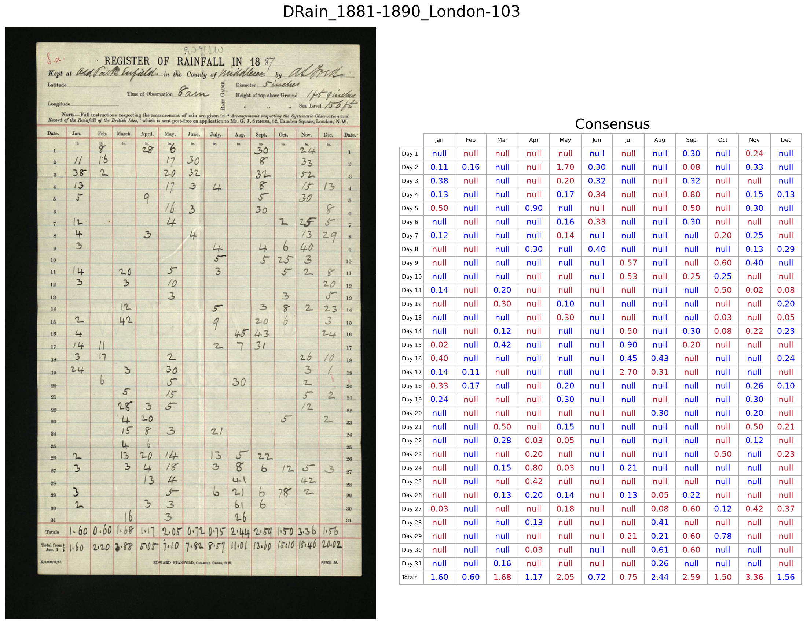
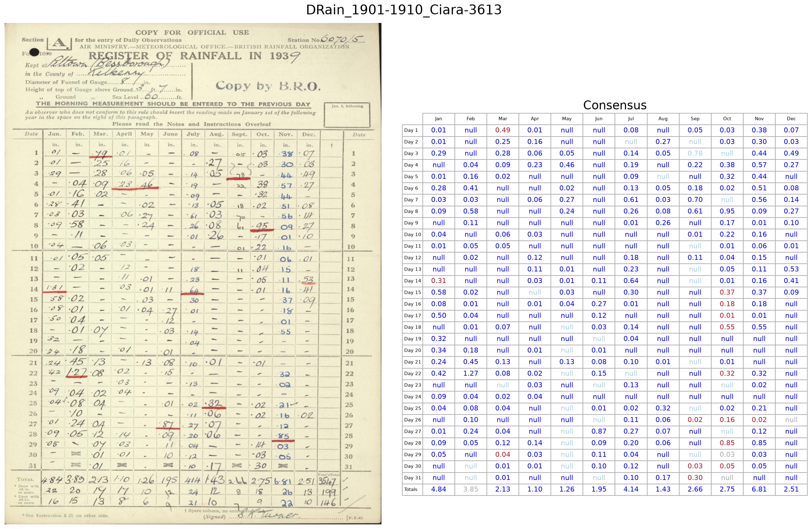

Second order — fine-tune on consensus¶
The first-order models are good, but they were trained only on synthetic data. To improve further we want to fine-tune on real images — but we have no ground-truth transcriptions for them. This stage solves that with a consensus: where several models agree, we trust them, and use that agreement as training truth.
Three notebooks:
Building a consensus training set¶
The make_1st_training_consensus notebook runs all five first-order models over ~1000 real images (with no ground truth), then builds a consensus: for each cell, where the models agree, that value becomes the training label; where they disagree, the cell is left unlabelled. The result is a real-image training set whose labels we can trust — not because we transcribed them, but because independent models converged on them.
{kind=link}

A consensus transcription on a real image. Values are kept where the first-order models agree, giving a trustworthy training label without any manual transcription.¶
Fine-tuning again¶
The finetune_1st_order_models notebook takes each first-order checkpoint and fine-tunes it a second time, now on the consensus set of real images. It submits the jobs to Azure ML, waits, discovers the new checkpoints, and registers them. These are the “second-order” models.
The best models yet¶
Validating the second-order models on the real test set with validate_2nd_order_real, every model improves again — and the weaker ones improve most:
Model |
First order |
Second order |
|---|---|---|
Granite |
92% |
95% |
Ministral |
85% |
94% |
Gemma-3 |
70% |
90% |
Gemma edge |
66% |
89% |
SmolVLM |
68% |
87% |
Every model is now in the high eighties or better. On our running example, almost everything is blue:
{kind=link}

The same test image after the second round of fine-tuning on real, consensus-labelled data. Nearly every value is now correct (blue).¶
Requiring agreement between these second-order models in an ensemble pushes the usable accuracy higher still — the same trick that carried Robot Rainfall Rescue to volunteer-level performance.
What you have after this stage¶
Second-order (consensus-trained) checkpoints for every model.
Real-data accuracy good enough to run in anger.
Next: Operations.